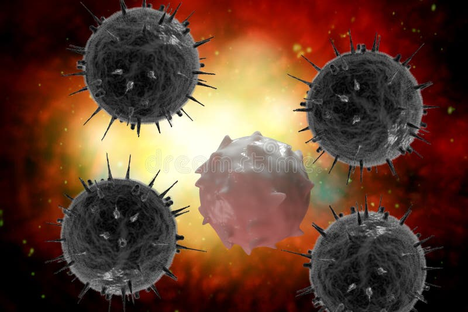

HIV: Compreendendo os Mecanismos de Agressão e Defesa
Uma abordagem científica sobre o vírus da imunodeficiência humana e sua relação com o sistema imunológico



Uma abordagem científica sobre o vírus da imunodeficiência humana e sua relação com o sistema imunológico
Compreendendo o vírus da imunodeficiência humana
O HIV (Vírus da Imunodeficiência Humana) é um retrovírus que ataca especificamente o sistema imunológico humano, comprometendo a capacidade do organismo de combater infecções e doenças. O vírus tem como alvo principal os linfócitos T CD4+, células fundamentais na coordenação da resposta imune adaptativa.
Descoberto na década de 1980, o HIV é responsável pela Síndrome da Imunodeficiência Adquirida (AIDS), uma condição caracterizada pela deterioração progressiva do sistema imunológico. O vírus possui alta capacidade de mutação e integração ao genoma das células hospedeiras, tornando-se um desafio persistente para a medicina moderna.
Estrutura detalhada do vírus HIV mostrando suas principais proteínas e componentes
Como o HIV subverte o sistema imunológico
O HIV representa um exemplo paradigmático de como patógenos podem subverter os mecanismos de defesa do hospedeiro. O vírus utiliza estratégias sofisticadas para evadir a resposta imune:
O HIV utiliza receptores CD4 e correceptores CCR5/CXCR4 para infectar preferencialmente linfócitos T helper, macrófagos e células dendríticas.
Como retrovírus, o HIV integra seu material genético ao DNA da célula hospedeira, estabelecendo infecção persistente.
Alta taxa de mutação permite escape imunológico e dificulta o desenvolvimento de vacinas eficazes.
A depleção progressiva de linfócitos T CD4+ resulta em imunodeficiência caracterizada por:
Resposta imune eficaz contra patógenos
Imunodeficiência progressiva
Estratégia educacional para conscientização sobre HIV
Desenvolvemos uma estratégia de intervenção baseada na educação em saúde e disseminação de informações científicas precisas sobre o HIV. Nossa abordagem reconhece que o conhecimento é uma ferramenta fundamental na prevenção e no combate ao estigma associado ao vírus.
Fornecer informações baseadas em evidências sobre transmissão, prevenção e tratamento do HIV
Combater preconceitos e discriminação através da informação e conscientização
Incentivar a realização de testes regulares e o diagnóstico precoce
Divulgar estratégias de prevenção incluindo PrEP, PEP e uso de preservativos
Criação de materiais educativos baseados em literatura científica atual
Desenvolvimento de site responsivo e perfis em redes sociais
Distribuição de conteúdo através de múltiplos canais digitais
Monitoramento do alcance e impacto da campanha
Campanha informativa online multiplataforma
Nossa solução consiste em uma campanha informativa digital multiplataforma que combina rigor científico com acessibilidade comunicacional. A estratégia integra website educativo e presença em redes sociais para maximizar o alcance e impacto das informações sobre HIV.
Portal centralizado com informações científicas detalhadas, recursos educacionais e links para serviços de saúde especializados.
Perfil dedicado à disseminação de informações através de posts educativos, stories informativos e IGTV com especialistas.
Informações precisas sobre virologia, imunologia e aspectos clínicos do HIV
Estratégias de prevenção combinada, incluindo métodos comportamentais e biomédicos
Informações sobre terapia antirretroviral e qualidade de vida
Combate ao estigma e promoção dos direitos das pessoas vivendo com HIV
Curiosidades científicas e perspectivas futuras
O HIV possui uma das maiores taxas de mutação conhecidas, com aproximadamente 10⁻⁴ substituições por nucleotídeo por ciclo de replicação. Esta característica contribui significativamente para a persistência viral e resistência a medicamentos.
Mesmo com terapia antirretroviral eficaz, o HIV persiste em reservatórios anatômicos como sistema nervoso central, tecido linfoide e células T de memória em estado de latência, representando o principal obstáculo para a cura.
Estudos científicos demonstram que pessoas com HIV em tratamento eficaz e carga viral indetectável não transmitem o vírus por via sexual, conceito conhecido como U=U (Undetectable = Untransmittable).
Aproximadamente 1% da população caucasiana possui mutação CCR5-Δ32 que confere resistência natural ao HIV, demonstrando a importância dos correceptores na infecção viral.
Pesquisas atuais exploram estratégias de edição genética usando CRISPR-Cas9 para modificar receptores celulares e tornar células resistentes à infecção pelo HIV.
Desenvolvimento de vacinas que estimulam resposta imune específica em pessoas já infectadas, visando controle viral sem necessidade de medicação contínua.
A pesquisa sobre HIV continua avançando em múltiplas frentes, desde o desenvolvimento de novas classes de antirretrovirais até estratégias de cura funcional. A implementação de políticas de saúde pública baseadas em evidências, combinada com avanços tecnológicos em diagnóstico e tratamento, oferece perspectivas otimistas para o controle da epidemia de HIV/AIDS.
A educação em saúde permanece como pilar fundamental na prevenção, sendo essencial para a redução de novos casos e eliminação do estigma. Iniciativas como esta campanha informativa contribuem para a construção de uma sociedade mais informada e solidária.
Nossa campanha contribui diretamente para a meta 3.3, que visa acabar com as epidemias de AIDS, tuberculose e malária até 2030, através da educação e prevenção.
Ao combater o estigma e promover informação acessível, contribuímos para a redução das desigualdades no acesso à saúde e direitos humanos.